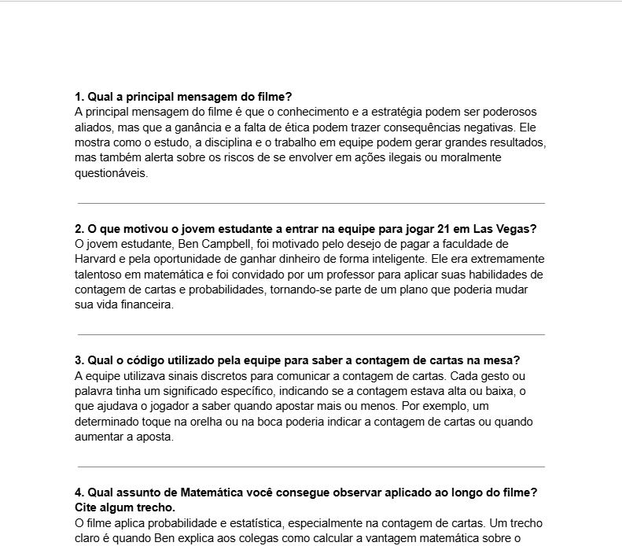
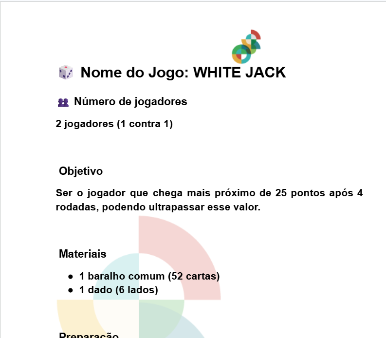

MATEMÁTICA
ATIVIDADES

Abrir Documento no Docs ↗Análise do Filme: Quebrando a Banca
H30, H31 | Competência C5
Compreender conceitos de probabilidade e raciocínio combinatório através da análise do filme, relacionando-os a situações reais.
Identificação de situações de risco, estratégias e decisões baseadas em probabilidade e padrões em eventos aleatórios.
"A atividade permitiu aplicar conceitos matemáticos de forma prática e contextualizada, tornando a aprendizagem mais dinâmica e instigante."

Abrir Documento no Docs ↗Jogo: WHITE JACK
H30, H31 | Competência C5
Aplicar conceitos de probabilidade e estratégia matemática de forma interativa através do jogo WHITE JACK.
Análise de decisões e resultados baseados em probabilidades e análise combinatória durante a dinâmica do jogo.
"A atividade foi divertida e educativa. O jogo estimula raciocínio lógico e planejamento estratégico baseado em probabilidades reais."